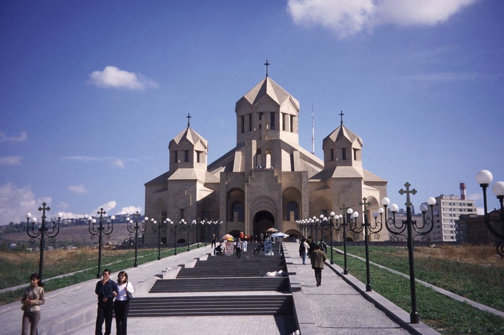
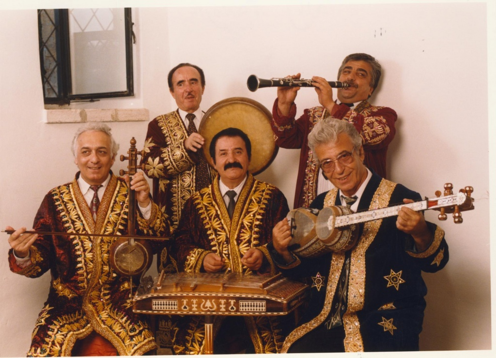

Культура Таджикистана уходит корнями в глубокую древность. На территории Таджикистана сохранились остатки поселений 6-5 вв. до н. э., глинобитных и сырцовых укреплений, найдены художественнее изделия из металла, камня, терракоты I-го тысячелетия до н. э. Раскопки города Пенджикента обнаружили жилые и культовые постройки, замечательные монументальные росписи, скульптуру, относящиеся к периоду формирования феодализма (VII -VIII вв). Наиболее значительными из сохранившихся архитектурных памятников культуры Таджикистана являются мавзолеи ХI - ХIVвв. находящиеся в с. Саят, в с. Мазари-Шериф, памятники Гиссарской долины, мечеть в Ура-Тюбе(ХVв).
Наличие мечетей, свидетельство исповедуемой религии- ислама. Накануне арабских завоеваний (в начале VII века н.э.) основными религиозными культами, были зороастризм, манихейство, буддизм и индуизм. Однако, все названные выше культы были постепенно вытеснены исламом. После разделения ислама на суннизм и шиизм, таджиками было выбрано первое направление. Религия таджиков определила их стремление к познанию мира через науку, литературу. Таджикский народ на протяжении тысячелетий бережно, как самое дорогое достояние, хранил свой язык, передавая из поколения к поколению. Во времена арабского ига завоеватели приложили немало усилий, чтобы уничтожить язык покоренного народа - дари. Однако, после длительной и героической борьбы во времена язык дари вновь обрел былую славу, на нем были созданы немеркнущие шедевры художественной литературы, научные трактаты и Период расцвета культуры Таджикистана, развитие науки, литературы, укрепление государственных устоев приходится на время правления династии Саманидов, и в особенности, одного из самых выдающихся ее представителей Исмаила Сомони.
Благоприятные условия, создаваемые для развития науки и культуры Таджикистана, явились той почвой, на которой расцвел талант целой плеяды великих ученых, поэтов, государственных деятелей. Лучшие сыны народа, цвет нации собрались во дворце Саманидов, с которыми связан золотой век таджикской цивилизации. Сегодня не только таджики, но и всё прогрессивное человечество гордится именами родоначальника персидско-таджикской литературы у Рудаки, ученых - Авиценны, Фирдоуси с его знаменитой героической эпопеей "Шахнаме", мудрого визиря Балъами. Золотыми буквами вписаны в летопись человечества имена Саади, Гафиза, Джалолиддина Балхи, Носира Хисрава и многих других. Трудно представить такие науки, как астрономия, математика, естествознание, философия, без величайших открытий и достижений Омара Хайяма, Ал-Беруни, Ал-Хоразми, Имома Тирмизи, Закария Рози, Фороби и других.
Продолжателем традиций и одновременно основателем новой таджикской литературы стал С. Айни, осветив различные аспекты истории, социальной, политической, культурной и литературной жизни своего народа. Современную культурную жизнь Таджикистана невозможно представить Государственного театра оперы и балета им. Айни, таджикского театр драмы им. Лахути, Русского драматического театра, Академии наук, государственных университетов, исторических музеев, музеев изобразительных искусств, ботанических садов, и прочих культурных заведений.
Таджики - народ, сохраняющий национальные традиции в быту, одежде, еде. До сих пор таджики ходят в национальных костюмах: мужчины в вышитых халатах и тюбетейках, а женщины в цветных вышитых платьях со штанами, обязательно косынка, а девушки по-прежнему заплетают по 40-60 косичек. А, собираясь за достарханом, едят национальные блюда, такие как: чак-чак-чак, форель по-вахшски, кала поча и другие не менее вкусные яства.
Традиционная одежда таджиков имела свои особенности в каждом из этнокультурных регионов, но обладала и общими чертами. У мужчин - рубаха туникообразного покроя, штаны с широким шагом, распашной халат, пояс-платок, тюбетейка, чалма и кожаные сапоги на мягкой подошве, кожаные с заострённым носом галоши (их носили отдельно, иногда надевали на сапоги), в горных местностях - туфли типа сабо с тремя шипами на подошве для удобства ходьбы по горным тропам.
У женщин - туникообразного покроя платья, в сельских районах - из гладких тканей, в горных южных районах - вышитые, особенно в Дарвале и Кулябе (образцы народного декоративного искусства). Широкие шаровары имели напуск у щиколотки. Головной убор - платки, тюбетейки (у гиссарских таджичек). Горожанки и равнинные таджички носили распашной халат, местную обувь. В современной одежде таджиков сочетаются традиционные элементы - верхний халат, тюбетейка с городской одеждой. Таджички сохраняют больше традиционных элементов одежды. Девушки и молодые женщины в основном носят платье на кокетке, которое широко распространено в Средней Азии (кроме Туркмении). Шаровары шьются эже, у молодых женщин значительно выше щиколотки. Традиционные украшения сочетаются с современными: ожерелья, подвески, серьги, кольца.
Одним из самых характерных крупных таджикских вышитых изделий является сюзане. Оно занимает важное место не только в украшении жилища, но и в самой жизни народа и является гордостью народного творчества. Необычайное разнообразие орнамента, гармония пропорций, красота, выразительность и исключительная законченность декоративного замысла сюзане достойны изумления и преклонения перед мастерством человеческих рук.
Кроме сюзане в равнинных областях Таджикистана существуют другие виды крупной декоративной вышивки Близкими по своему назначению к сюзане являются борпуш, руиджо, карс . Ими тоже украшают стены, покрывают постель и сложенные в стопы одеяла. Каждое из этих изделий участвует также в свадебных и в погребальных обрядах. По своим размерам эти вещи гораздо меньше сюзане (200Х200, 200Х150, 100Х300 см. А по разнообразию узоров и расцветке часто превосходят их.
Художественная керамика является одним из древнейших видов искусства. Основным материалом, как и для древней архитектуры и скульптуры, служила глина. Образцы керамики таджикского народа: в Тохаристане, Согдиане (долина рек Зеравшана и Кашкадарьи), в Вахшской и Ферганской долинах. На территории Таджикистана первые находки относятся к концу 4-го тысячелетия до н.э. Кроме разнообразной посуды, выделываются детские игрушки и скульптурки: аспак (лошадка), шер (лев) маймун (обезьянка), хуштак (свистулька), бесчисленные фантастические звери.
Ювелирное искусство - одно из ярчайших проявлений художественного творчества таджикского народа. Самые ранние его образцы относятся к далекой древности, и были найдены учеными - археологами еще в слоях мезолита. В ювелирных изделиях, как в зеркале находят свое отражение этические нормы общества, религиозные верования, социальные отношения и традиции, берущие начало в этнической истории, и потому являющиеся обязательной принадлежностью народного костюма. При этом магическая и сакральная функции украшений имели гораздо большее значение их эстетической или финансовой ценности.
Селения таджиков представляли собой компактные кишлаки с тесной застройкой, лабиринтом кривых улиц и тупиков, глухими стенами домов и заборов — дувалов. Дома в основном глинобитные (в горных районах сложенные из камней), с плоской крышей, иногда с террасой (айвон). Традиции проявились в народном таджикском жилище, которое можно разделить на два типа: равнинный, отличавшийся большой архитектурной сложностью, и горный, более простой по конструкции. Равнинный тип был распространен к северу от Гиссарского хребта - в бассейне Зеравшана и в Ферганской долине. Такой дом строили на цоколе, на деревянном каркасе, обычно заложенном сырцовым кирпичом. Иногда стены клали из битой глины или из сырцового кирпича. Кровля была плоская, земляная, с обмазкой из глины. Вдоль фасада строили террасу. Под потолком делали узкие световые проемы, заменявшие окна. Характерной особенностью жилища был камин или надочажный колпак с дымоходом. В Гиссарской и Вахшскои долинах жилище имело несколько иную конструкцию. Иногда оно было с двускатной крышей (часто без потолка) или с двускатным навесом над традиционной кровлей. В южных, горных районах Таджикистана жилища имеют вид горного, приспособленного для этого условия, жилья. Такое жилище имело массивный вид, было больших размеров и рассчитано на многолюдные большие, или патриархальные, неразделенные семьи. Стены таких домов складывали из дикого камня, иногда из сырцового кирпича. Деревянная кровля имела особенность, наиболее ярко выраженную в домах памирских таджиков, - ступенчатый деревянный свод со светодымовым отверстием в центре. Кровля поддерживалась тремя-пятью опорными столбами, расположенными внутри дома. В плане это жилище было однокамерным. Вдоль двух продольных и торцевой (напротив входа) стен располагались нары, обмазанные глиной, с узким проходом между ними.В наши дни даже в отдаленных горных кишлаках жилища старой конструкции, без окон, обычно используют только как хозяйственные помещения.
Жилище делилось на мужскую и женскую половины: в женскую — внутреннюю часть дома — посторонние не допускались. Интерьер жилого дома таджиков Южного Таджикистана Характерна особая комната для гостей (мехмонхона): пол в них застилается кошмами, паласами и коврами, на которых по периметру помещения раскладывают длинные узкие стеганые одеяла для сидения (курпача), в центре — скатерть (дастархан). Стены украшались вышивкой (сюзане) и коврами. У равнинных таджиков стенные ниши по традиции часто выполняют функции шкафов. Современное жилище памирских таджиков сохраняет традиционную конструкцию, только своды кровли и опорные столбы расположены внутри дома. Современное жилище значительно модернизировано: на пол и нары теперь настилают доски и красят их, делают большие окна, вместо очага пользуются разного вида печами, внутренние и наружные стены белят. Что же касается жилищ равнинного типа, то многие их традиционные черты довольно устойчиво сохраняются и в современном сельском доме.v
В прошлом большие поселения и города имели сходную планировку. В центре возвышалась цитадель, окруженная глинобитными стенами. Вокруг этой наиболее древней части поселения располагалась более поздняя его часть с узкими улицами, на которые выходили глухие стены усадеб. За стеной с несколькими воротами находились предместья; здесь между усадьбами располагались пашни, огороды и сады. Современное жилище представляет корпусные блочные или каменные постройки, в которой размещена типовая мебель, но традиционно в домах таджиков много ковров.
Народная музыка Таджикистана, богата и разнообразна, в ней, как в зеркале отражается жизнь нации, ее характер и эмоции, быт и трудовая деятельность, обычаи и традиции. По характеру исполнения ее можно разделить на стили, тесно привязанные к географии: центральный - кухистони (Гиссар, Куляб, Гарм), северный (Худжанская область), памирский (Горно-Бадахшанская автономная область). Музыка разных областей Таджикистана, хоть и не имеет разительных противоречий, но весьма отлична одна от другой. Так, северный стиль напоминает образцы музыкальной культуры Бухары и Самарканда, а мелодика Горного-Бадахшана очень созвучна с музыкой Кавказа. В народной музыке Таджикистана существует великое множество жанров: трудовые, эпические, обрядовые (свадебные, календарные, похоронные и др.), лирические песни и инструментальные пьесы. Трудовые будни людей нашли свое художественное отражение в песнях пастухов и напевах сопровождающих нелегкий женский труд, примером которому может служить песня ткачихи - "Ашулаи бофан-да". Так же очень актуальны песни на темы тяжелой доли земледельцев и ремесленников. Но самым распространенным примером, конечно, является глубоко печальная и распевная, дехканская «майда», в которой отражены и сетование на тяжелую судьбу земледельца, и размышления о жизни, и скорбь по неразделенной любви. Сама форма "майда" складывается из отдельных, порой совершенно не связанных между собой стихотворных бейтов (двустиший), разнообразных по содержанию, но пронизанных одним лейтмотивом.
Эпическое песнопение испокон веку связывают с популярным героическим сказанием "Гуругли", бытующем в Центральном Таджикистане. Мелодика "Гуругли" имеет повествовательно-речитативную форму, чередующуюся с песенными эпизодами, где образы героев, а также содержание отдельных песенных сцен раскрываются в специфических напевах-сказаниях. Исполняют "Гуругли" в определенной горловой манере - пение сдавленным звуком. Однако, наибольший и самый интересный культурный пласт представляют собой обрядовые песнопения. Здесь и календарные песни, приуроченные к народным праздникам: Наврузу, Празднику подснежников – «бойчечак», Празднику тюльпанов –«сайри гули» и др. И свадебные мелодии, вплетаемые в "сценарий" ритуала, и вносящие в торжество всеобщее ликование. И напевы, связанные со смертью человека, отмеченные огромной эмоциональностью и трагичностью.
Народная музыка Таджикистана, майда, Гуругли, музыкальный таджикистан, Лирическая песня, Шашмаком, Бузрук, наво, рост, Сегох, Ирок, макомы Лирическая песня – любимейший и самый распространенный жанр в таджикском вокальном искусстве. Именно в ней раскрываются переживания по поводу многочисленных жизненных ситуаций и судьбоносных событий. Лирика способна отразить и религиозные чувства, и гражданский пафос песен о Родине, и тоску безысходного одиночества, и неподдельный искрометный юмор. Однако, при всем тематическом многообразии, главной все же остается любовная тема, воплощаемая в поэтической форме газели. Музыкальными инструментами, сопровождающими исполнение "Шашмакома", обычно являются дойра и танбур.
Вообще, музыкальной летописью таджиков можно считать и многочисленные исторические памятники, дошедшие до наших времен. Такие, как красочные фрески настенной живописи в Пенджикенте, терракотовые «нэцке», музыкантов, сделанных в Самарканде, изображения на серебряной посуде для пиршеств, самые ранние из которых датируются III- II вв. до н. э. Также многочисленны замечательные миниатюры из старинных рукописей XIV -XVI вв, дающие яркое представление о месте музыки и музыкальных инструментов жизни средневекового общества. Сцены, изображающие музыкантов весьма разнообразны, это и дворцовые приемы, и парадные выезды, и военные походы, а так же встречи влюбленных, интимные вечеринки, и полные трагизма боевые сражения. Обширными сведениями о музыкальном искусстве таджиков наполнены многочисленные труды, известнейших людей своего времени - Фараби, Ибн Сино, Джами и др.
Литература и искусство Таджикистана неразрывно связаны со всем центральноазиатским регионом, который подарил миру великие имена в области литературы и искусства - Рудаки, Авиценну, Хисроу, Саади, Джами и других. Основоположник классической персидско-таджикской литературы Абу-Абдулло Рудаки жил в IX-X вв. В своих произведениях (лирических, философских, дидактических) он проповедовал гуманизм, свободолюбие, патриотизм. Рудаки (857- 941 гг.) имел огромную популярность в народе. Из того, что написал поэт, до нас дошло лишь около 2 тыс. стихотворных строк. Но и они дают яркое представление о его поэтическом даровании и глубине философских размышлений.
В X-XI вв. протекала деятельность одного из величайших поэтов мировой литературы Фирдоуси (934-1020 гг.). Он создал гениальную эпопею "Шахнаме", насчитывающую 120 тыс. стихотворных строк. В ней Фирдоуси рисует героическую историю своего народа, воспевает его борьбу за независимость родного края. Творчество поэта оказало большое влияние на развитие персидско-таджикской литературы. Важную роль в формировании философской лирики сыграл Абу-Али Ибн-Сина (Авиценна, 980-1037 гг.). Великий ученый и поэт боролся против мракобесия, прославлял науку, пытливый человеческий разум. Его идеи позднее развивал поэт и философ Носир Хисроу (1004-1088 гг.). В поэмах "Саодатнома" ("Книга счастья"), "Рушноинома" ("Книга света") он восхвалял людей труда, резко осуждал царей, ростовщиков, святош, проповедовал идеи о достоинстве человека и значении науки. В XlII в. выдающимся поэтом был Саади. Его произведения "Бустан" и "Гулистан" снискали ему славу учителя жизни.
Два века спустя началось творчество Джами (1414-1492 гг.). В семи поэмах "Хафт Авранг" ("Семь престолов") и сборнике притч "Бэхарестан" ("Весенний сад") он отстаивал идеи гуманизма. В XIX в. большой вклад в развитие литературы внес крупнейший просветитель Таджикистана Ахмад Дониш (1827-1897 гг.). В остром сатирическом произведении "Жизнеописание эмиров благородной Бухары" поэт говорил о необходимости свержения власти богатых. В прошлом веке в республике выросли свои поэты, прозаики, драматурги. К ним принадлежат Садриддин Айни, Абулькасим Лахути, Мирзо Турсун-заде, Мирсаид Миршакар, Боки Рахим-заде и другие, чьи произведения известны в стране и за ее пределами. Читателям представлены романы "Рабы", "Дохунда", повесть "Смерть ростовщика" С. Айни, поэмы "Мы победили", "Венец и знамя", "Богатырь-мир" А. Лахути. Широко известен современный поэт республики Мирзо Турсун-заде.
В республике издается на таджикском, узбекском и русском языках много газет и журналов. Местное издательство выпускает учебники, политическую, художественную, детскую и научно-популярную литературу. Крупнейшая Государственная публичная библиотека имени Фирдоуси: в ней более 1 млн. книг.